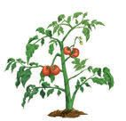
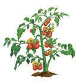
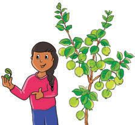
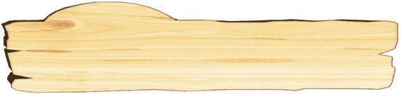
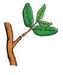
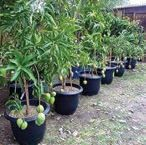
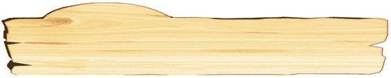
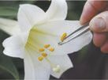
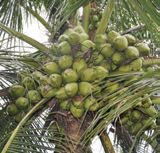
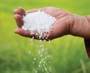

ചിത്രം നിരീക്ഷിക്കൂ. ഏതൊൊക്കെ ഊർജരൂപങ്ങളാണ് ഇവിടെ പ്രയോോജനപ്പെടുത്തുന്നത്?
പ്രകാശോോർജം
u സൗരോോർജം
u
u
നിത്യജീവിതത്തിൽ വിവിധ ഊർജരൂപങ്ങൾ നമ്മൾ പ്രയോോജനപ്പെടുത്തുന്നുണ്ട്.
താപോോർജം പ്രയോോജനപ്പെടുത്തുന്ന വിവിധ സന്ദർഭങ്ങൾ എന്തതൊക്കെയാണ്? ലിസ്റ്റ്
ചെയ്യൂ.
u
പാചകം ചെയ്യാൻ
u
താപോോർജത്തെക്കുറിച്ച് കൂടുതൽ അറിയേണ്ടേ?
111
Page 8
Figure fig_ch01_p008_01 (Page 8)
അടിസ്ഥാനശാസ്ത്രം
താപോോർജം ജലത്തിന്റെ അവസ്ഥകളിൽ വരുത്തുന്ന മാറ്റങ്ങൾ നിരീക്ഷിച്ചറിഞ്ഞി
ട്ടുണ്ടല്ലലോ.
ജലത്തിന്റെ ഖരരൂപമാണല്ലലോ ഐസ്. വായുവിൽ ഐസ് തുറന്നുവച്ചാൽ എന്ത് സംഭവി
ക്കും?
ജലം തിളപ്പിച്ചാലോോ? ജലത്തിന്റെ വാതകരൂപമാണല്ലലോ നീരാവി.
പദാർഥങ്ങൾ ചൂടാക്കുമ്പപോൾ അവ താപോോർജം സ്വീകരിക്കുന്നു. താപോോർജത്തിന് പദാർഥ
ങ്ങളുടെ അവസ്ഥയിൽ മാറ്റം വരുത്താൻ കഴിയുമോോ? നിങ്ങളുടെ ഊഹം എന്താണ്?
ഈ ഊഹം ശരിയാണോോ എന്ന് പരിശോോധിക്കാൻ ഒരു പരീക്ഷണം ചെയ്യാം.
ഉരുകുന്ന ഐസ് ക്യയൂബുകൾ
ആവശ്യമായ സാമഗ്രികൾ : 2 ഗ്ലാസ് ടംബ്ലർ, സാധാരണതാപനിലയിലുള്ള ജലം, ചൂടുള്ള
ജലം, ഐസ് ക്യയൂബുകൾ.
സാധാരണ താപനിലയിലുള്ള ജലം
ചൂടുള്ള ജലം
ചിത്രത്തിൽ കാണുന്നതുപോോലെ ഒരു ഗ്ലാസിൽ സാധാരണ താപനിലയിലുള്ള ജലവും
മറ്ററൊരു ഗ്ലാസിൽ ചൂടുള്ള ജലവും എടുക്കുക. രണ്ടിലും ഏതാനും ഐസ് ക്യയൂബുകൾ
ഇടുക.
ഏത് ഗ്ലാസിലെ ഐസ് ക്യയൂബാണ് വേഗത്തിൽ ഉരുകുന്നത്? എന്തുകൊൊണ്ട്? ശാസ്ത്രപുസ്ത
കത്തിൽ എഴുതൂ.
ഐസിന്റെ അവസ്ഥാമാറ്റത്തിന് കാരണമായ ഊർജരൂപം ഏതാണ്?
ഐസ് ഉരുകാൻ ആവശ്യമായ താപം ലഭിച്ചത് ജലത്തിൽ നിന്നല്ലേ.
തണുപ്പുകാലത്ത് വെളിച്ചെണ്ണ കട്ടിയാകുന്നത് ശ്രദ്ധിച്ചിട്ടുണ്ടടോ? എന്താണ് കാരണം?
പദാർഥങ്ങളുടെ അവസ്ഥയിൽ മാറ്റം വരുത്താൻ കഴിയുന്ന ഊർജരൂപമാണ് താപം.
താപം ഒരു പദാർഥത്തിൽനിന്ന് മറ്ററൊരു പദാർഥത്തിലേക്ക് കൈമാറ്റം ചെയ്യപ്പെടുമോോ?
എന്താണ് നിങ്ങളുടെ അഭിപ്രായം? ക്ലാസിൽ ചർച്ച ചെയ്യൂ.
112
Page 9

Figure fig_ch01_p009_01 (Page 9)

Figure fig_ch01_p009_02 (Page 9)
ക്ലാസ് - VII
താപത്തിന്റെ കൈമാറ്റം
ചിത്രം നിരീക്ഷിക്കൂ.
ഗ്യാാസ് സ്റ്റൗൗവിൽ ഒരു പാത്രത്തിൽ അരി
പാകം ചെയ്യുന്നതാണ് ചിത്രത്തിൽ കാണുന്നത്.
ഗ്യാാസ് സ്റ്റൗൗവിലെ തീനാളത്തിൽ നിന്ന് പ്രസരി
ക്കുന്ന താപോോർജം അരിക്ക് ലഭിച്ചത് എങ്ങനെയാണ്? താപം കൈമാറി ലഭിച്ച വഴികൾ
എഴുതി ഫ്ലോോചാർട്ട് പൂർത്തിയാക്കൂ.
സ്റ്റൗവിലെ തീനാളം താപം
........................... താപം
........................... താപം
അരി
സ്റ്റൗവിന്റെ തീനാളത്തിലൂടെ പ്രസരിക്കുന്ന താപം പാത്രത്തിലൂടെയും വെള്ളത്തിലൂടെ
യും കൈമാറി അരിയിൽ എത്തിയതുകൊൊണ്ടാണല്ലലോ അരി വേവുന്നത്.
ഇതിൽനിന്ന് നിങ്ങൾ എത്തിച്ചേരുന്ന നിഗമനം എന്താണ്?
താപപ്രേഷണം (Transmission of Heat)
താപം ഒരിടത്തുനിന്ന് മറ്ററൊരിടത്തേക്ക് പ്രവഹിക്കുന്നതാണ് താപപ്രേഷണം.
ഗ്യയാസ് സ്റ്റൗ ഓഫ് ചെയ്ത് അല്പനേരം കഴിഞ്ഞാൽ പാത്രത്തിന് എന്ത് സംഭവിക്കും? എന്തു
കൊൊണ്ടാണ് പാത്രത്തിന് താപം നഷ്ടപ്പെടുന്നത്?
പാത്രത്തിന് മാത്രമാണോോ താപം നഷ്ടപ്പെടുന്നത്? അതിനുള്ളിലെ പദാർഥങ്ങൾക്കും
താപം നഷ്ടപ്പെടുന്നില്ലേ? ചർച്ച ചെയ്യൂ.
പാത്രത്തിൽനിന്ന് മാത്രമല്ല പാത്രത്തിനുള്ളിലെ പദാർഥങ്ങളിൽനിന്നും ചുറ്റുപാടിലേക്ക്
താപം പ്രേഷണം ചെയ്യപ്പെടുന്നുണ്ട്. ഇതിന്റെ ഫലമായി പാത്രത്തിനും അതിനുള്ളിലെ
പദാർഥങ്ങൾക്കും താപനഷ്ടം സംഭവിക്കുന്നു.
താപപ്രേഷണം ഖരവസ്തുക്കളിൽ
നമ്മുടെ ചുറ്റുപാടും ധാരാളം വസ്തുക്കൾ ഖരം, ദ്രാവകം, വാതകം എന്നീ അവസ്ഥകളിൽ
സ്ഥിതി ചെയ്യുന്നു എന്ന് നിങ്ങൾക്കറിയാം. ഇവയിലെല്ലാം താപം പ്രേഷണം ചെയ്യുന്നത്
ഒരുപോോലെയാണോോ? നിങ്ങളുടെ ഊഹം കുറിക്കൂ.
ഒരു പരീക്ഷണം ചെയ്തു നോോക്കാം.
20 cm നീളമുള്ള അലുമിനിയം കമ്പി, മൊൊട്ടു
സൂചികൾ, മെഴുകുതിരി, തീപ്പെട്ടി എന്നിവ
ശാസ്ത്രകിറ്റിൽ നിന്ന് എടുക്കൂ.
അലുമിനിയം
കമ്പി
ചിത്രത്തിൽ കാണുന്നതുപോോലെ അലുമിനിയം
കമ്പിയിൽ മെഴുകുപയോോഗിച്ച് തുല്യയ അകല
ത്തിൽ മൊൊട്ടുസൂചികൾ ഒട്ടിക്കുക. ഇതിന്റെ
ഒരറ്റം കത്തുന്ന മെഴുകുതിരി ഉപയോോഗിച്ച് ചൂടാക്കുക. എന്താണ് നിരീക്ഷിച്ചത്?
113
Page 10
അടിസ്ഥാനശാസ്ത്രം
എല്ലാ മൊൊട്ടുസൂചികളും ഒരുമിച്ചാണോോ വീണത്? ഏത് മൊൊട്ടുസൂചിയാണ് ആദ്യയം വീണത്?
തീനാളത്തിനടുത്തുള്ള മൊൊട്ടുസൂചികൾ ആദ്യയം വീഴാനും അകലെ നിൽക്കുന്നവ പിന്നീട്
വീഴാനും കാരണം എന്തായിരിക്കും?
നിങ്ങളുടെ നിരീക്ഷണങ്ങളും നിഗമനങ്ങളും ശാസ്ത്രപുസ്തകത്തിൽ രേഖപ്പെടുത്തൂ.
തീജ്വാലയിൽനിന്ന് അലുമിനിയം കമ്പിയിലൂടെ താപം പ്രേഷണം ചെയ്യപ്പെടുന്നതു
കൊൊണ്ടാണ് ഇങ്ങനെ സംഭവിച്ചത്.
ചെമ്പ്, ഇരുമ്പ് കമ്പികൾ ഉപയോോഗിച്ച് ഈ പരീക്ഷണം ആവർത്തിക്കൂ.
അലുമിനിയത്തിൽ മാത്രമല്ല മറ്റു ലോോഹങ്ങളിലും താപപ്രേഷണം നടക്കുന്നു.
മരക്കഷണം, ഗ്ലാസ് റോോഡ് എന്നിവ ഉപയോോഗിച്ച് പരീക്ഷണം ആവർത്തിക്കൂ.
നിങ്ങളുടെ നിരീക്ഷണങ്ങൾ ചർച്ചചെയ്ത് ശാസ്ത്രപുസ്തകത്തിൽ രേഖപ്പെടുത്തു.
ചാലനം (Conduction)
ലോോഹക്കമ്പിയുടെ ഒരറ്റത്ത് താപം ലഭിക്കുമ്പപോൾ ആ ഭാഗത്തുള്ള തന്മാത്രകൾ
താപം സ്വീകരിച്ച് തൊൊട്ടടുത്തുള്ള തന്മാത്രകളിലേക്ക് കൈമാറ്റം ചെയ്യുന്നു. ഇത്തര
ത്തിൽ താപം കൈമാറി പ്രേഷണം ചെയ്യപ്പെടുന്ന രീതിയാണ് ചാലനം. ഖരവസ്തു
ക്കളിൽ താപം പ്രേഷണം ചെയ്യപ്പെടുന്നത് ചാലനം വഴിയാണ്.
ലോോഹങ്ങളിൽ താപം പ്രേഷണം ചെയ്യപ്പെടുന്നത് താപോോർജത്തിന്റെ കൈമാറ്റത്തിലൂടെ
യാണെന്ന് നിങ്ങൾക്ക് മനസ്സിലായല്ലലോ.
താപം നന്നായി കടത്തിവിടുന്ന വസ്തുക്കൾ
എല്ലാ വസ്തുക്കളും താപം നന്നായി കടത്തിവിടുമോോ?
അലുമിനിയം, ചെമ്പ്, മരക്കഷണം, ഇരുമ്പ്, ഗ്ലാസ് റോോഡ് എന്നിവ ഉപയോോഗിച്ച് പരീക്ഷ
ണം ചെയ്തില്ലേ. ഇവയെ താപം നന്നായി കടത്തിവിടുന്നവ, താപം നന്നായി കടത്തിവിടാ
ത്തവ എന്നിങ്ങനെ തരംതിരിച്ച് പട്ടിക പൂർത്തിയാക്കൂ.
താപം നന്നായി കടത്തിവിടുന്നവ താപം നന്നായി കടത്തിവിടാത്തവ
എല്ലാ ഖരവസ്തുക്കളും താപം നന്നായി കടത്തിവിടുന്നവയല്ലെന്ന് തിരിച്ചറിഞ്ഞില്ലേ.
സുചാലകങ്ങളും കുചാലകങ്ങളും (Good Conductors and Poor Conductors)
ചാലനംവഴി താപം നന്നായി കടത്തിവിടുന്ന വസ്തുക്കളെ സുചാലകങ്ങളെന്നും
താപം നന്നായി കടത്തിവിടാത്ത വസ്തുക്കളെ കുചാലകങ്ങളെന്നും പറയുന്നു.
114
Page 11
Figure fig_ch01_p011_01 (Page 11)

Figure fig_ch01_p011_02 (Page 11)
ക്ലാസ് - VII
നിങ്ങളുടെ അനുഭവത്തിൽനിന്ന് സുചാലകങ്ങൾ, കുചാലകങ്ങൾ എന്നിവയ്ക്ക് കൂടുതൽ
ഉദാഹരണങ്ങൾ കണ്ടെത്തി പട്ടികപ്പെടുത്തൂ.
സുചാലകങ്ങളെയും കുചാലകങ്ങളെയും നിത്യജീവിതത്തിൽ നാം പ്രയോോജനപ്പെടുത്തു
ന്നുണ്ട്.
താഴെപ്പറയുന്ന സന്ദർഭങ്ങളിൽ കുചാലകങ്ങളാണോോ സുചാലകങ്ങളാണോോ നാം ഉപയോോ
ഗിക്കുന്നത്?
u
ചൂടുള്ള പാത്രം അടുപ്പിൽനിന്ന് ഇറക്കിവയ്ക്കാൻ
u
പാചകം ചെയ്യാൻ ഉപയോോഗിക്കുന്ന പാത്രങ്ങളുടെ കൈപ്പിടി നിർമ്മിക്കാൻ
u
പാചകത്തിനുള്ള പാത്രങ്ങൾ നിർമ്മിക്കാൻ
താഴെയുള്ള ചിത്രങ്ങൾ പരിശോോധിക്കു.
ഒരേ പാത്രത്തിൽ സുചാലകങ്ങളും കുചാലകങ്ങളും ഉപയോോഗിച്ചിട്ടുണ്ടല്ലലോ. അതിന്റെ
കാരണം വിശദീകരിക്കൂ. ഇത്തരത്തിലുള്ള പാത്രങ്ങൾക്ക് കൂടുതൽ ഉദാഹരണങ്ങൾ
കണ്ടെത്തി ക്ലാസിൽ അവതരിപ്പിക്കൂ.
താപപ്രേഷണം ദ്രാവകങ്ങളിലും വാതകങ്ങളിലും
ഖരങ്ങളിൽ താപപ്രേഷണം നടക്കുന്നത് ചാലനം വഴിയാണെന്ന് മനസ്സിലാക്കിയല്ലലോ.
ദ്രാവകങ്ങളിലും വാതകങ്ങളിലും ഏത് രീതിയിലാണ് താപപ്രേഷണം നടക്കുന്നത്?
എന്തുകൊൊണ്ടാണ് പാചകം ചെയ്യുമ്പപോൾ പാത്രത്തിന്റെ അടിഭാഗത്തുതന്നെ തീ കത്തിക്കു
ന്നത്? പാത്രത്തിന്റെ വശങ്ങളിൽ ചൂടാക്കിയാലോോ? നിങ്ങളുടെ പ്രതികരണങ്ങൾ എന്താണ്?
ഒരു പരീക്ഷണം ചെയ്താലോോ! ?
ആവശ്യമായ സാമഗ്രികൾ :
അടപ്പുള്ള സുതാര്യമായ പ്ലാസ്റ്റിക് ജാർ, ജാറിന്റെ അതേ വാവട്ടമുള്ള ഗ്ലാസ് ടംബ്ലർ,
മേസൺപൈപ്പ്, പൊൊട്ടാസ്യയം പെർമാംഗനേറ്റ്, ചൂടുവെള്ളം, തണുത്തവെള്ളം.
പ്ലാസ്റ്റിക് ജാറിന്റെ അടപ്പിൽ രണ്ട് ദ്വാരങ്ങൾ ഉണ്ടാക്കുക. ഓരോോ ദ്വാരത്തിലും 10 സെന്റീ
മീറ്റർ നീളമുള്ള മേസൺപൈപ്പ് വായു കടക്കാത്തവിധം ഉറപ്പിക്കുക. പ്ലാസ്റ്റിക് ജാറിന്റെ
അതേ വാവട്ടമുള്ള ഗ്ലാസ് ടംബ്ലറിൽ ചൂടുവെള്ളം എടുക്കുക. അതിൽ അല്പം പൊൊട്ടാസ്യയം
പെർമാംഗനേറ്റ് തരികൾ ചേർക്കുക.
115
Page 12

Figure fig_ch01_p012_01 (Page 12)

Figure fig_ch01_p012_02 (Page 12)
അടിസ്ഥാനശാസ്ത്രം
പ്ലാസ്റ്റിക് ജാറിൽ തണുത്ത വെ
ള്ളമെടുത്തശേഷം
മേസൺപൈ
പ്പ് ഉറപ്പിച്ച അടപ്പുകൊൊണ്ട് അട
യ്ക്കുക. പൊൊട്ടാസ്യം പെർമാംഗനേറ്റ്
കലർത്തിയ ചൂടുവെള്ളം എടുത്ത
ഗ്ലാസിന് മുകളിൽ ഈ പ്ലാസ്റ്റിക്
ജാർ കമഴ്ത്തി വയ്ക്കുക.
മേസൺ
പൈപ്പ്
തണുത്ത
വെള്ളം
ചൂടു
വെള്ളം
നിങ്ങൾ എന്താണ് നിരീക്ഷിക്കുന്ന
ത്? ചർച്ച ചെയ്ത് ശാസ്ത്രപുസ്തകത്തിൽ പ്ലാസ്റ്റിക് ജാർ
രേഖപ്പെടുത്തൂ.
ഗ്ലാസ് ടംബ്ലർ
മുകളിലെ പ്ലാസ്റ്റിക് ജാറിലെ വെള്ളം താഴേക്കകൊഴുകുന്നുണ്ടടോ? ഗ്ലാസ്ടംബ്ലറിലെ നിറമു
ള്ള ചൂടുവെള്ളം മുകളിലേക്ക് പ്രവഹിക്കുന്നത് കാണുന്നുണ്ടടോ?
മുകളിലെ ജാറിലെ വെള്ളം ഒരു പൈപ്പിലൂടെ താഴേക്ക് ഒഴുകാനും താഴെയുള്ള ഗ്ലാസിലെ
വെള്ളം മറ്റേ പൈപ്പിലൂടെ മുകളിലേക്ക് പ്രവഹിക്കാനും എന്തായിരിക്കും കാരണം?
ജാറിലെയും ഗ്ലാസിലെയും വെള്ളത്തിന്റെ താപനിലവ്യത്യയാസം പരിഗണിച്ചുകൊൊണ്ട്
നിങ്ങളുടെ നിഗമനം എഴുതൂ.
ഒരു മേസൺപൈപ്പിലൂടെ ചൂടുവെള്ളം മുകളിലേക്ക് ഒഴുകുമ്പപോൾ തണുത്ത വെള്ളം
മറ്റേ പൈപ്പിലൂടെ താഴേക്ക് ഒഴുകുന്നു. ഇത് ചൂടുപിടിച്ച് വീണ്ടും മുകളിലേക്ക് ഉയരുന്നു.
ഇങ്ങനെ താപം ദ്രാവകത്തിന്റെ എല്ലായിടത്തും വ്യയാപിക്കുന്നു.
ഈ പരീക്ഷണത്തിൽ ചൂടുവെള്ളത്തിൽനിന്ന് തണുത്ത വെള്ളത്തിലേക്ക് താപം
പ്രേഷണം ചെയ്യപ്പെട്ടത് തന്മാത്രകളുടെ സ്ഥാനമാറ്റം മുഖേനയാണ്. തന്മാത്രകൾ സഞ്ചരി
ക്കുമ്പപോൾ താപോോർജം കൈമാറുന്നു. ദ്രാവകങ്ങളിലെല്ലാം താപപ്രേഷണം നടക്കുന്നത്
തന്മാത്രകളുടെ സ്ഥാനമാറ്റം വഴിയാണ്.
വാതകങ്ങളിലെ താപപ്രേഷണം
ദ്രാവകങ്ങളിൽ നടക്കുന്നതുപോോലെയാണോോ വാതകങ്ങളിൽ താപപ്രേഷണം നടക്കുന്നത്?
നമുക്ക് ഒരു പരീക്ഷണം ചെയ്തുനോോക്കാം.
ആവശ്യമായ സാമഗ്രികൾ : 5 സെന്റീമീറ്റർ വണ്ണവും 30 സെന്റീമീറ്റർ നീളവും ഉള്ള പി.വി.
സി പൈപ്പ്, ചന്ദനത്തിരി, തീപ്പെട്ടി, മെഴുകുതിരി
പി.വി.സി. പൈപ്പിന്റെ ഒരറ്റത്ത്, എട്ട് സെൻറീമീറ്റർ ഉയരത്തിൽ പെൻസിൽ വണ്ണമുള്ള
ഒരു ദ്വാാരം ഉണ്ടാക്കുക. മേശപ്പുറത്ത് ഒരു ചെറിയ മെഴുകുതിരി കത്തി
ച്ചു വയ്ക്കുക. പി.വി.സി പൈപ്പിനുള്ളിൽ മെഴുകുതിരി വരത്തക്ക വിധം
പിവിസി
ചിത്രത്തിൽ കാണുന്നതുപോോലെ പൈപ്പ് ക്രമീകരിക്കുക. പൈപ്പ് ക്രമീക
പൈപ്പ്
രിക്കുമ്പോോൾ ദ്വാാരമിട്ട ഭാഗം പിവിസി പൈപ്പിന്റെ അടിഭാഗത്ത് വരണം.
ചന്ദനത്തിരി കത്തിച്ച്, പുക ഉയരുന്നത് നിരീക്ഷിക്കൂ. കത്തിച്ച ചന്ദന
ത്തിരി പൈപ്പിന്റെ ദ്വാാരത്തിന് സമീപത്തായി കൊൊണ്ടുവരൂ. പുകയുടെ
പ്രവാഹത്തിന്റെ ദിശ നിരീക്ഷിക്കൂ? എന്ത് മാറ്റമാണ് കാണുന്നത്?
116
Page 13
ക്ലാസ് - VII
പി.വി.സി പൈപ്പിനകത്തെ വായു ചൂടുപിടിച്ച് മുകളിലേക്ക് ഉയരുമ്പപോൾ ആ ഭാഗത്തേ
ക്ക് ദ്വാരത്തിലൂടെ തണുത്ത വായു പ്രവഹിക്കുന്നു. ഈ പ്രവാഹത്തതോടൊൊപ്പം ചന്ദനത്തി
രിയുടെ പുകയും അകത്തുകടക്കുന്നു. ഇങ്ങനെ അകത്തുകടന്ന വായുവും ചൂടുപിടിച്ച്
മുകളിലേക്ക് ഉയരുന്നു. ഇവിടെയും ദ്രാവകങ്ങളിൽ നടക്കുന്നതുപോോലെ തന്മാത്രകളുടെ
സ്ഥാനമാറ്റം മുഖേനയാണ് താപം ഒരു ഭാഗത്തുനിന്ന് മറ്റ് ഭാഗങ്ങളിലേക്ക് പ്രേഷണം
ചെയ്യപ്പെട്ടത്. ഇങ്ങനെ പൈപ്പിനകത്തെ വായുവിൽ താപം വ്യയാപിക്കുന്നു. നിങ്ങൾ നട
ത്തിയ രണ്ട് പരീക്ഷണങ്ങളിലും താപം പ്രേഷണം ചെയ്യപ്പെട്ടത് തന്മാത്രകളുടെ ചലനം
മൂലമല്ലേ.
സംവഹനം (Convection)
വാതകങ്ങളിലും ദ്രാവകങ്ങളിലും തന്മാത്രകളുടെ സ്ഥാനമാറ്റം മുഖേന നടക്കുന്ന
താപപ്രേഷണ രീതിയാണ് സംവഹനം.
ചാലനത്തിലും സംവഹനത്തിലും താപപ്രേഷണം നടക്കുമ്പപോൾ തന്മാത്രകൾ വഹി
ക്കുന്ന പങ്ക് എന്താണ്?
ഇവിടെ തന്മാത്രകൾ മാധ്യമമായി നിലകൊൊള്ളുന്നു.
മാധ്യമത്തിന്റെ സഹായം ഇല്ലാതെ താപം പ്രേഷണം ചെയ്യപ്പെടുമോോ?
ഭൂമിക്ക് താപം ലഭിക്കുന്നത് മുഖ്യമായും സൂര്യനിൽ നിന്നാണെന്ന് നിങ്ങൾക്കറിയാം.
സൂര്യന്റെ ചൂട് ഭൂമിയിൽ എത്തുന്നത് എങ്ങനെയാണ്? സൂര്യനും ഭൂമിക്കും ഇടയ്ക്ക്
ശൂന്യസ്ഥലം ഉണ്ടെന്നും നമുക്കറിയാം. ഈ ശൂന്യസ്ഥലം 15 കോോടിയോോളം കിലോോമീറ്റർ
വ്യയാപിച്ചുകിടക്കുന്നു. ചാലനംമൂലമോോ സംവഹനംമൂലമോോ ചൂട് സൂര്യനിൽനിന്ന് ഭൂമിയിൽ
എത്തുമോോ? ഭൂമിക്കും സൂര്യനും ഇടയ്ക്ക് മാധ്യമം ഇല്ല. അതുകൊൊണ്ട് ചാലനം മുഖേനയോോ
സംവഹനം മുഖേനയോോ ചൂട് പ്രസരിക്കാൻ സാധിക്കില്ല. എന്നാലും സൂര്യനിൽനിന്നുള്ള
താപം ഭൂമിയിൽ എത്തുന്നുണ്ട് എന്ന് നമുക്കറിയാം. ഇതെങ്ങനെയാണ് സംഭവിക്കുന്നത്?
വികിരണം (Radiation)
മാധ്യമത്തിന്റെ സഹായമില്ലാതെ താപം പ്രേഷണം ചെയ്യപ്പെടുന്ന രീതിയാണ്
വികിരണം. വികിരണംവഴി എല്ലാ ദിശയിലേക്കും താപം പ്രേഷണം ചെയ്യപ്പെടുന്നു.
സൂര്യന്റെ താപം ഭൂമിയിൽ എത്തുന്നത് വികിരണംവഴിയാണ്. ഇരുണ്ടതോോ പരുപ
രുത്തതോോ ആയ പ്രതലങ്ങളെക്കാൾ വെളുത്തതോോ മിനുസമുള്ളതോോ ആയ പ്രതല
ങ്ങൾ വികിരണതാപത്തെ കൂടുതൽ പ്രതിപതിപ്പിക്കും.
വികിരണം വഴി താപം പ്രേഷണം ചെയ്യപ്പെടുന്ന സന്ദർഭങ്ങൾ എഴുതൂ.
u
പ്രകാശിച്ചുകൊൊണ്ടിരിക്കുന്ന ഫിലമെന്റ് ബൾബിൽ നിന്ന് താപം താഴെയെത്തുന്നു.
u
വീടുകളിൽ പാകംചെയ്ത ആഹാരപദാർഥങ്ങളുടെ ചൂട് അധികനേരം നിലനിർത്താൻ
വിവിധ മാർഗങ്ങൾ അവലംബിക്കാറില്ലേ? താപനഷ്ടം കുറയ്ക്കാൻ സാധാരണ ഉപയോോഗി
ക്കുന്ന ഉപകരണങ്ങൾ ഏതൊൊക്കെയാണ്? ലിസ്റ്റ് ചെയ്യൂ.
117
Page 14
Figure fig_ch01_p014_01 (Page 14)
അടിസ്ഥാനശാസ്ത്രം
ചൂടാറാപ്പെട്ടി
ചൂടാറാപ്പെട്ടി എന്തിനാണ് ഉപയോോഗിക്കുന്നത്?
പാചകഇന്ധനത്തിന്റെ ഉപയോോഗം കുറയ്ക്കുന്നതിനും പാചകം
ചെയ്ത ഭക്ഷ്യയവസ്തുക്കൾ ചൂട് നഷ്ടപ്പെടാതെ സംരക്ഷിക്കുന്നതിനു
മുള്ള സംവിധാനമാണ് ചൂടാറാപ്പെട്ടി. ഇതിൽ ഭക്ഷ്യയവസ്തുക്കൾ
ശരാശരി 8 മണിക്കൂർ സമയം ചൂട് നഷ്ടപ്പെടാതെ സൂക്ഷിക്കാം.
ഏകദേശം വെന്ത അരി വെള്ളത്തോോടെ ഇതിൽ ഇറക്കിവച്ചാൽ
അരി വേവിക്കാനുള്ള ഇന്ധനച്ചെലവ് പകുതിയോോളം കുറക്കാം.
ചൂടാറാപ്പെട്ടിയിൽ തെർമ്മോോകോോൾ ഉപയോോഗിക്കുന്നുണ്ടെന്നറിയാമല്ലോോ. ഇത് കുചാലക
മായതിനാൽ ചാലനംവഴി താപനഷ്ടം കുറയുന്നു. ചൂടാറാപ്പെട്ടി അടച്ചുവയ്ക്കുന്നതിനാൽ
സംവഹനം വഴി താപനഷ്ടം കുറയുന്നു.
ചൂടാറാപ്പെട്ടിയിൽ താപനഷ്ടം ഒഴിവാക്കപ്പെടുന്നത് എങ്ങനെയാണ്? ചർച്ചചെയ്ത് ശാസ്ത്ര
പുസ്തകത്തിൽ എഴുതൂ.
ഐസ് പെട്ടി
മത്സ്യംപോോലുള്ള ആഹാരപദാർഥങ്ങൾ കേടുകൂടാതെ സൂക്ഷിക്കുന്നതിന് ഐസ് ഉപ
യോോഗിക്കുന്നത് നിങ്ങൾക്കറിയാം. ഐസ് വളരെവേഗം ഉരുകാതെ സൂക്ഷിക്കാൻ ഐസ്
െപട്ടി ഉപയോോഗിക്കുന്നു. നമുക്കകൊരു ഐസ് പെട്ടി നിർമ്മിച്ചാലോോ.
ആവശ്യമായ സാമഗ്രികൾ : ചെറിയപെട്ടി, തെർമ്മമോകോോൾ, പശ, വെള്ള ഇനാമൽ
പെയിന്റ്.
തെർമോോകോോൾ മുറിച്ച് ചെറിയ പെട്ടിയുടെ ഉൾവശത്ത് പശയുപയോോഗിച്ച് ഒട്ടിക്കുക.
വശങ്ങളിലും അടിയിലും അടപ്പിലും തെർമോോകോോൾ ഒട്ടിക്കണം. പെട്ടിയുടെ അകത്തും,
പുറത്തും വെള്ള ഇനാമൽപെയിന്റ് അടിക്കണം. ഐസ് കഷണങ്ങൾ പെട്ടിയിൽവച്ച്
അടയ്ക്കുക. എത്ര സമയം ഐസ് ഉരുകാതെ സൂക്ഷിക്കാൻ കഴിയുന്നു എന്ന് നിരീക്ഷിക്കൂ.
ഇത്തരം ഐസ് പെട്ടികൾ ഏതൊൊക്കെ സന്ദർഭങ്ങളിൽ ഉപയോോഗിക്കുന്നുണ്ടെന്ന് അന്വവേ
ഷിച്ചറിയൂ. ഐസ് പെട്ടിയിൽ മൂന്ന് തരത്തിലുള്ള താപനഷ്ടങ്ങളും കുറയ്ക്കുന്നതെങ്ങനെ
യെന്ന് ക്ലാസിൽ ചർച്ചചെയ്യൂ.
ഖരവസ്തുക്കളുടെ താപീയവികാസം
താപം ലഭിക്കുമ്പപോൾ ഖരവസ്തുക്കൾ വികസിക്കുമോോ? ഒരു പരീക്ഷണം ചെയ്തുനോോക്കാം.
ആവശ്യമായ സാമഗ്രികൾ: ബാറ്ററി, ബൾബ്, കണക്ടിംഗ് വയർ, രണ്ട് അലുമിനിയം തകി
ടുകൾ, മെഴുകുതിരി, തീപ്പെട്ടി.
ചിത്രത്തിൽ കാണുന്നതുപോോലെ ബാറ്ററി, ബൾബ്, കണക്ടിംഗ് വയർ, രണ്ട് അലുമിനിയം
തകിടുകൾ എന്നിവ ഉപയോോഗിച്ച് വൈദ്യയുതസെർക്കീട്ട് ഒരു ബോോർഡിൽ ക്രമീകരിക്കുക.
വയറിന്റെ ഇരുവശങ്ങളിലും അലുമിനിയംതകിടുകൾ പരസ്പരം തൊൊടാതെ വളരെ അടു
ത്തടുത്തായിട്ടാണ് വയ്ക്കേണ്ടത്. അലുമിനിയം തകിടുകൾ മെഴുകുതിരി ഉപയോോഗിച്ച്
ചൂടാക്കുക. എന്താണ് നിരീക്ഷിച്ചത്?
118
Page 15

Figure fig_ch01_p015_01 (Page 15)
ക്ലാസ് - VII
ബൾബ്
ബൾബ് പ്രകാശിച്ചില്ലേ? ബൾബ്
പ്രകാശിച്ചത് എന്തുകൊൊണ്ടാവാം? നി
ങ്ങളുടെ അഭിപ്രായം കുറിക്കൂ. താപം
ലഭിച്ചപ്പോോൾ അലുമിനിയം തകിടു
കൾക്ക് എന്ത് സംഭവിച്ചു? താപം
ലഭിച്ചപ്പോോൾ അവ വികസിച്ച് കൂട്ടിമു
ട്ടുകയും സെർക്കീട്ട് പൂർത്തിയാവുക
യും ചെയ്തു. ഇനി മെഴുകുതിരി മാറ്റി
നിരീക്ഷിക്കൂ. പ്രകാശിച്ചുകൊൊണ്ടിരി
ക്കുന്ന ബൾബിന് എന്താണ് സംഭവി
ച്ചത്? എന്തുകൊൊണ്ട്?
ബാറ്ററി
അലുമിനിയം തകിടുകൾ
തണുക്കുമ്പപോൾ സെർക്കീട്ട് തുറന്നതാകാൻ എന്താണ് കാരണം?
ഈ പരീക്ഷണത്തിൽനിന്ന് നിങ്ങൾ എത്തിച്ചേർന്ന നിഗമനം രേഖപ്പെടുത്തൂ.
താപം ലഭിക്കുമ്പപോൾ അലുമിനിയംതകിടുകൾ വികസിച്ച് സർക്കീട്ട് പൂർത്തിയായി
ബൾബ് പ്രകാശിക്കുന്നു. താപം നഷ്ടപ്പെടുമ്പപോൾ തകിടുകൾ സങ്കകോചിക്കുകയും സെർ
ക്കീട്ട് വിച്ഛേദിക്കപ്പെടുകയും ചെയ്യുന്നു. അതിനാൽ ബൾബ് അണയുന്നു.
അലുമിനിയത്തിനുപകരം ചെമ്പ്, ഇരുമ്പ് എന്നീ ലോോഹങ്ങൾ ഉപയോോഗിച്ച് പരീക്ഷണം
ആവർത്തിക്കൂ. നിരീക്ഷണഫലങ്ങൾ ശാസ്ത്രപുസ്തകത്തിൽ രേഖപ്പെടുത്തൂ.
ഖരവസ്തുക്കളുടെ താപീയവികാസം
താപം ലഭിക്കുമ്പപോൾ ഖരവസ്തുക്കൾ വികസിക്കുന്നു. തണുക്കുമ്പപോൾ സങ്കകോചിക്കുന്നു.
നിത്യജീവിതത്തിൽ ഖരവസ്തുക്കളുടെ താപീയവികാസവുമായി ബന്ധപ്പെട്ട് നിങ്ങളുടെ
ശ്രദ്ധയിൽപ്പെട്ടിട്ടുള്ള സന്ദർഭങ്ങൾ എന്തതൊക്കെയാണ്? ശാസ്ത്രപുസ്തകത്തിൽ എഴുതൂ.
ഇലക്ട്രിക്്പപോസ്റ്റിൽ വൈദ്യയുതി കൊൊണ്ടുപോോകുന്നതിനുള്ള കമ്പികൾ നിങ്ങൾ കണ്ടിട്ടില്ലേ?
ഇവ വേനൽക്കാലത്ത് അയഞ്ഞു പോോകുന്നത് എന്തുകൊൊണ്ടാണ്?
താഴെപ്പറയുന്ന സന്ദർഭങ്ങൾ പരിശോോധിച്ച് നമുക്ക് ഇതിന്റെ കാരണം കണ്ടെത്താം.
u
മുറുകിയുറച്ചുപോോയ പെൻക്യയാപ്പ് ചെറുതായി ചൂടാക്കി ഊരിയെടുക്കുന്നു.
u
മുറുകിയ സ്റ്റീൽ ചോോറ്റുപാത്രത്തിന്റെ അടപ്പ് ചൂടാക്കി തുറക്കുന്നു.
ഈ സന്ദർഭങ്ങൾ വിശകലനംചെയ്ത് നിങ്ങളുടെ കണ്ടെത്തൽ ക്ലാസിൽ ചർച്ച ചെയ്ത്
ശാസ്ത്രപുസ്തകത്തിൽ എഴുതൂ.
താപം ലഭിക്കുമ്പപോൾ ദ്രാവകങ്ങൾ വികസിക്കുമോോ?
ഒരു പരീക്ഷണത്തിലൂടെ നമുക്ക് കണ്ടെത്താം.
ആവശ്യമായ സാമഗ്രികൾ : ഇൻജക്ഷൻകുപ്പി, ഇൻജക്ഷൻകുപ്പിക്ക് ചേരുന്ന റബ്ബർ
കോോർക്ക്, മഷി തീർന്ന റീഫിൽ കുഴൽ, പാത്രം, ചൂടുവെള്ളം, പൊൊട്ടാസ്യയം പെർമാംഗനേറ്റ്,
സാധരണ താപനിലയിലുള്ള വെള്ളം.
119
Page 16

Figure fig_ch01_p016_01 (Page 16)
അടിസ്ഥാനശാസ്ത്രം
ഇൻജക്ഷൻകുപ്പിയിൽ ജലം നിറച്ച് അല്പം
പൊൊട്ടാസ്യം പെർമാംഗനേറ്റ് തരികൾ
ഇടുക. റബ്ബർകോോർക്കിൽ ചെറിയ ദ്വാാരം
ഉണ്ടാക്കുക. അതിൽ റീഫിൽ കുഴൽ ഉറപ്പി
ക്കുക. ഇൻജക്ഷൻകുപ്പി കോോർക്കു കൊൊണ്ട്
അടയ്ക്കുക.
റീഫില്ലിലെ ജലവിതാനം നൂലുകെട്ടി അട
യാളപ്പെടുത്തുക.
സാധാരണ
താപനി
ലയുള്ള
വെള്ളം
ചൂടു
വെള്ളം
പാത്രത്തിൽ ചൂടുവെള്ളമെടുത്ത് അതിലേക്ക് ഇൻജക്ഷൻകുപ്പി ഇറക്കിവയ്ക്കുക.
റീഫില്ലിലെ ജലനിരപ്പിന് എന്തുമാറ്റമാണ് വരുന്നത്? എന്തുകൊൊണ്ട്?
ജലത്തിന് താപം ലഭിച്ചപ്പപോൾ അത് വികസിച്ചത് കൊൊണ്ടല്ലേ ഈ മാറ്റം ഉണ്ടായത്?
ഇൻജക്ഷൻകുപ്പിയിലെ ജലം തണുത്താൽ ജലനിരപ്പ് പൂർവസ്ഥിതിയിൽ എത്തുമോോ?
നിങ്ങൾ ചെയ്ത പരീക്ഷണത്തിൽനിന്ന് എത്തിച്ചേരുന്ന നിഗമനം എന്താണ്?
കുപ്പിയിലെ ജലം വികസിക്കുകയും അത് റീഫില്ലിൽ തള്ളിക്കയറുകയും ചെയ്യുന്നു. അതു
കൊൊണ്ടാണ് ജലവിതാനം ഉയർന്നത്. തണുക്കുമ്പപോൾ ജലം സങ്കകോചിക്കുന്നു. അതിനാ
ലാണ് ജലനിരപ്പ് പൂർവസ്ഥിതിയിൽ ആയത്.
വാതകങ്ങളിലെ താപീയവികാസം
താപം ലഭിക്കുമ്പപോൾ ഖരവസ്തുക്കൾക്കും ദ്രാവകങ്ങൾക്കും ഉണ്ടാകുന്ന മാറ്റങ്ങൾ തന്നെ
യാണോോ വാതകങ്ങൾക്കും ഉണ്ടാകുന്നത്? താപം ലഭിക്കുമ്പപോൾ വാതകങ്ങളും വികസി
ക്കുമോോ?
പരീക്ഷണം ചെയ്തു കണ്ടെത്താം.
ആവശ്യമായ സാമഗ്രികൾ : അലുമിനിയംവിളക്ക്, പ്ലാസ്റ്റിക് ട്യയൂബ്, ബോോർഡ്, നിറമുള്ള
ജലം, ചൂടുള്ള ജലം, തണുത്ത ജലം.
അലുമിനിയംവിളക്കിൽ പ്ലാസ്റ്റിക് ട്യയൂബ് ചിത്രത്തിൽ കാണുന്നതുപോോലെ ഉറപ്പിക്കുക.
ട്യയൂബിന്റെ മറ്റേ ഭാഗം U ആകൃതിയിൽ ഒരു ബോോർഡിൽ ഉറപ്പിക്കുക. പ്ലാസ്റ്റിക് ട്യയൂബിൽ
രണ്ടടോ മൂന്നനോ തുള്ളി നിറമുള്ള ജലം ഒഴിക്കുക.
അലുമിനിയംവിളക്ക് ചൂടുള്ള ജലത്തിൽ ഇറക്കിവയ്ക്കൂ. എന്താണ് സംഭവിക്കുക? കാരണ
മെന്ത്?
ഇനി അലുമിനിയംവിളക്ക് തണുത്ത ജലത്തിൽ ഇറക്കിവയ്ക്കുക. എന്താണ് നിരീക്ഷിക്കുന്നത്?
കാരണമെന്ത്?
അലുമിനിയംവിളക്ക് ചൂടാകുമ്പപോൾ അതിനുള്ളിലെ വായുവും ചൂടാകില്ലേ? ചൂടായ വായു
വികസിക്കുന്നതുകൊൊണ്ടാണ് ട്യയൂബിലെ നിറമുള്ള ജലത്തുള്ളി മുകളിലേക്ക് നീങ്ങുന്നത്.
എങ്കിൽ തണുക്കുമ്പപോൾ വാതകങ്ങൾക്ക് എന്ത് സംഭവിക്കും?
അലുമിനിയംവിളക്ക് തണുക്കുമ്പപോൾ വായു സങ്കകോചിക്കുന്നതിനാൽ നിറമുള്ള ജലത്തുള്ളി
ട്യയൂബിലൂടെ പിന്നിലേക്ക് നീങ്ങി പൂർവസ്ഥാനത്തെത്തുന്നു.
വാതകങ്ങളിലെ താപീയവികാസം
ചൂടാക്കുമ്പപോൾ വാതകങ്ങൾ വികസിക്കുന്നു; തണുക്കുമ്പപോൾ സങ്കകോചിക്കുന്നു.
താപനില
നീളം, വീതി, ഉയരം, പരപ്പളവ്, വ്യാപ്തം തുടങ്ങിയവയുടെ അളവ് പറയാൻ
യൂണിറ്റുകൾ ഉപയോോഗിക്കുന്നത് നിങ്ങൾക്കറിയാമല്ലോോ. അതുപോോലെ
താപത്തിന്റെ അളവ് സൂചിപ്പിക്കാനും യൂണിറ്റുകൾ ഉപയോോഗിക്കുന്നുണ്ട്.
താപത്തിന്റെ അളവിനെ സൂചിപ്പിക്കുന്ന പദമാണ് താപനില. ഡിഗ്രി സെൽ
ഷ്യയസ് (0C), ഡിഗ്രി ഫാരൺഹീറ്റ് (0F) എന്നീ യൂണിറ്റുകളാണ് താപനില
സൂചിപ്പിക്കുന്നതിന് ഉപയോോഗിക്കുന്നത്.
നിത്യയജീവിതത്തിൽ താപനില അറിയേണ്ട ആവശ്യം വരാറില്ലേ.
പനി വരുമ്പോോൾ ശരീരത്തിന്റെ താപനിലയ്ക്ക് എന്ത് സംഭവിക്കും?
ആശുപത്രിയിൽവച്ച് നിങ്ങളുടെ ശരീരതാപനില പരിശോോധിച്ചിട്ടില്ലേ? ഏത്
ഉപകരണമാണ് ഇതിനുപയോോഗിക്കുന്നത്?
ശരീരതാപനില അളക്കാൻ ക്ലിനിക്കൽ തെർമോോമീറ്റർ ഉപയോോഗിക്കുന്നു.
സാധാരണ അവസ്ഥയിൽ മനുഷ്യയന്റെ ശരീരതാപനില 370C (98.60F) ആണ്.
121
ക്ലിനിക്കൽ
തെർമോോമീറ്റർ
Page 18

Figure fig_ch01_p018_01 (Page 18)
അടിസ്ഥാനശാസ്ത്രം
ഒരു ക്ലിനിക്കൽ തെർമോോമീറ്റർ നിരീക്ഷിക്കൂ.
അതിലെ അളവുകൾ എത്ര ഡിഗ്രിയിലാണ് തുടങ്ങിയതെന്നും എത്ര ഡിഗ്രിയിലാണ് അവ
സാനിക്കുന്നതെന്നും കണ്ടെത്തി ശാസ്ത്രപുസ്തകത്തിൽ കുറിക്കൂ. ഇത്തരത്തിൽ ഒരു പരിധി
എടുത്തിരിക്കുന്നത് എന്തുകൊൊണ്ടാണ്? ക്ലിനിക്കൽ തെർമോോമീറ്റർ ഉപയോോഗിച്ച് ടീച്ചറുടെ
സഹായത്താൽ സഹപാഠികളുടെ താപനില കണ്ടെത്തി പട്ടികപ്പെടുത്തൂ.
താപനില അളക്കാൻ ലബോോറട്ടറിയിൽ ഉപയോോഗിക്കുന്ന ഉപകരണമാണ് ലബോോറട്ടറി
തെർമോോമീറ്റർ.
ലബോോറട്ടറി തെർമോോമീറ്റർ ഉപയോോഗിച്ച് ഒരു പരീക്ഷണം ചെയ്താലോോ.
ലബോോറട്ടറി തെർമോോമീറ്റർ
ഒരു ബീക്കറിൽ വെള്ളം ചൂടാക്കൂ. തെർമോോമീറ്റർ ഉപയോോഗിച്ച് ഓരോോ 5 മിനിറ്റിലും വരുന്ന
താപനില പട്ടികയിൽ രേഖപ്പെടുത്തി ക്ലാസിൽ അവതരിപ്പിക്കൂ.
സമയം (മിനുറ്റ്)
താപനില (ഡിഗ്രി സെൽഷ്യസ്)
5
10
15
20
അന്തരീക്ഷതാപനില
പകലാണോോ രാത്രിയിലാണോോ അന്തരീക്ഷത്തിന്റെ താപനില ഉയരുന്നത്? എന്തുകൊൊണ്ട്?
രാവിലെയുള്ള താപനില ആയിരിക്കുമോോ ഉച്ചയ്ക്ക് അനുഭവപ്പെടുന്നത്?
വൈകുന്നേരമോോ?
അന്തരീക്ഷതാപനിലയിലെ വ്യത്യയാസം പ്രകൃതിപ്രതിഭാസങ്ങൾക്ക് കാരണമാകുമോോ?
സൂര്യന്റെ താപംമൂലം ഭൂമിയിലെ മണ്ണും ജലവും ചൂടാകുന്നു.
ഒരേസമയം മണ്ണും ജലവും വെയിലത്തുവച്ചാൽ ഏതാവും വേഗത്തിൽ ചൂടാവുക? നിങ്ങ
ളുടെ ഊഹം എന്താണ്?
നിങ്ങളുടെ ഊഹം ശരിയാണോോ എന്ന് പരിശോോധിക്കാൻ നമുക്കകൊരു പരീക്ഷണം ചെയ്യാം.
നല്ല വെയിലുള്ള ദിവസം പരീക്ഷണം ചെയ്യാൻ ശ്രദ്ധിക്കുമല്ലലോ.
ആവശ്യമായ സാമഗ്രികൾ : രണ്ട് ഗ്ലാസ് ടംബ്ലറുകൾ, രണ്ട് ലബോോറട്ടറി തെർമോോമീറ്ററു
കൾ, ജലം, മണൽ
122
Page 19

Figure fig_ch01_p019_01 (Page 19)
ക്ലാസ് - VII
തെർമോോമീറ്റർ
തെർമോോ
മീറ്റർ
വെള്ളം
ചിത്രത്തിൽ കാണുന്നതുപോോലെ ഒരു
ഗ്ലാസിൽ മണലും മറ്റൊൊരു ഗ്ലാസിൽ
ജലവും എടുത്ത് ലബോോറട്ടറി തെർ
മോോമീറ്റർ ഉപയോോഗിച്ച് താപനില
പരിശോോധിക്കുക. രണ്ടു ഗ്ലാസും വെ
യിലത്ത് വയ്ക്കുക. തുടർന്ന് 20 മിനിറ്റ്
ഇടവിട്ട് മണലിന്റെയും ജലത്തിന്റെ
യും താപനില തെർമോോമീറ്റർ ഉപ
യോോഗിച്ച് അളന്ന് പട്ടികയിൽ രേഖ
പ്പെടുത്തൂ.
മണൽ
സമയം (മിനിറ്റ്)
20
താപനില
മണൽ
ജലം
40
60
മണലാണോോ ജലമാണോോ വേഗത്തിൽ ചൂടായത്?
തുടർന്ന് ഇരു ഗ്ലാസ്സുകളും വെയിലിൽ നിന്ന് തണലിലേക്ക് മാറ്റുക. 20 മിനിറ്റ് ഇടവിട്ട്
താപനില അളന്ന് രേഖപ്പെടുത്തൂ.
സമയം (മിനിറ്റ്)
20
താപനില
മണൽ
ജലം
40
60
മണലാണോോ ജലമാണോോ വേഗം തണുക്കുന്നത്?
പട്ടികകൾ വിശകലനം ചെയ്യൂ. കണ്ടെത്തലുകൾ ശാസ്ത്രപുസ്തകത്തിൽ രേഖപ്പെടുത്തൂ.
ക്ലാസിൽ അവതരിപ്പിച്ച് ചർച്ചചെയ്യൂ.
കരക്കാറ്റും കടൽക്കാറ്റും
ജലം സാവധാനവും മണൽ വേഗത്തിലും ചൂടാകുന്നു എന്ന് കണ്ടെത്തിയില്ലേ. ചൂടായ
മണൽ വേഗം തണുക്കുകയും ചൂടായ ജലം സാവധാനത്തിൽ തണുക്കുകയും ചെയ്യുന്നു
വെന്നും മനസ്സിലായില്ലേ?
123
ഭൂമിയിൽ കരയും കടലും ഉണ്ടല്ലലോ. സൂര്യപ്രകാശം ഏൽക്കുമ്പപോൾ കരയാണോോ
കടലാണോോ വേഗം ചൂടാവുക?
രാത്രിയിൽ ഏതായിരിക്കും വേഗത്തിൽ തണുക്കുക? പരീക്ഷണങ്ങളിൽനിന്ന് ലഭിച്ച
കണ്ടെത്തലുകളെ താരതമ്യയം ചെയ്ത് നിഗമനം രൂപീകരിക്കൂ.
കടൽക്കാറ്റ്
ജലത്തെക്കാൾ വേഗത്തിൽ കര
ചൂടുപിടിക്കുകയും വേഗത്തിൽ
തണുക്കുകയും
ചെയ്യുന്നു.
അതുകൊൊണ്ട് പകൽ സമയ
ങ്ങളിൽ കരയ്ക്ക് കടലിനെക്കാൾ
ചൂട് കൂടുതലാണ്.
കരയോോടു തൊൊട്ടു മുകളിലുള്ള
വായു ചൂടുപിടിക്കുന്നു. ഈ
വായു വികസിച്ച് മുകളിലേക്ക്
കടൽക്കാറ്റ്
പോോകുന്നു. കരയുമായി താര
തമ്യയപ്പെടുത്തിയാൽ കടലിന് മുകളിലുള്ള വായു തണുത്തതാണ്. കരയിലെ ചൂടുപിടിച്ച
വായു മുകളിലേക്ക് പോോകുമ്പോോൾ കടലിനുമുകളിലെ തണുത്ത വായു ഈ സ്ഥലത്തേ
ക്ക് വരുന്നു. ഇങ്ങനെയാണ് കടൽക്കാറ്റ് ഉണ്ടാകുന്നത്.
എന്നാൽ രാത്രിയിലോോ?
കരയിലാണോോ കടലിലാണോോ രാത്രിയിൽ വായുവിന് കൂടുതൽ തണുപ്പുള്ളത്?
കരക്കാറ്റ്
കടലിനെക്കാൾ വേഗത്തിൽ കര തണുക്കുന്നു. അതിനാൽ കടലിന് മുകളിലുള്ള വായുവിന്
താരതമ്യേേന ചൂട് കൂടുതലാണ്. അതിനാൽ കടലിന് മുകളിലെ വായുവാകും കൂടുതൽ
വികസിച്ചിരിക്കുക. അപ്പോോൾ
കരയുടെ മുകളിലുള്ള തണു
ത്തവായു കടലിലേക്ക് പ്രവഹി
ക്കുന്നു. ഇത് കരക്കാറ്റിന് കാര
ണമാകുന്നു.
കടലിന്റെയും
കരയുടെയും
താപനിലയുമായി ബന്ധപ്പെട്ടു
വരുന്ന പ്രകൃതി പ്രതിഭാസങ്ങ
ളാണ് കടൽക്കാറ്റുംം കരക്കാറ്റുംം
കരക്കാറ്റ്
എന്ന് നിങ്ങൾക്ക് മനസിലായി
ല്ലേ. ഇത്തരം പ്രകൃതിപ്രതിഭാസങ്ങളുമായി ബന്ധപ്പെട്ട വാർത്തകൾ, ചിത്രങ്ങൾ എന്നിവ
ശേഖരിച്ച് പതിപ്പ് തയ്യാറാക്കൂ.
124
Page 21

Figure fig_ch01_p021_01 (Page 21)
ക്ലാസ് - VII
വിലയിരുത്താം
1.
നിത്യജീവിതത്തിലെ ചില സന്ദർഭങ്ങൾ ശ്രദ്ധിക്കൂ.
u
വലിച്ചുകെട്ടിയ വൈദ്യയുതകമ്പികൾ വേനൽക്കാലത്ത് അയയുന്നു.
u
ഒരു പിവിസി പൈപ്പിന്റെ ഒരഗ്രം ചൂടാക്കി അതിനുള്ളിൽ അതേ വ്യയാസമുള്ള
മറ്ററൊരു പൈപ്പിന്റെ അഗ്രമിറക്കി യോോജിപ്പിക്കുന്നു.
a. താപവുമായി ബന്ധപ്പെട്ട് വസ്തുക്കളുടെ ഏത് സവിശേഷതയാണ് ഈ രണ്ട്
സന്ദർഭങ്ങളിലും പ്രകടമാകുന്നത്?
b. വെയിലത്ത് വച്ച വീർപ്പിച്ച ബലൂൺ പൊൊട്ടുന്നത് ഇതിന്റെ അടിസ്ഥാനത്തിൽ
വിശദീകരിക്കാമോോ?
2.
ഒരു പരീക്ഷണത്തിന്റെ ക്രമീകരണം ചിത്രത്തിൽ നൽകിയിരിക്കുന്നത് ശ്രദ്ധിക്കൂ.
പ്ലാസ്റ്റിക് ട്യയൂബ് ഘടിപ്പിച്ച ഒരു ഇൻജക്ഷൻബോോട്ടിൽ ഒരു ബീക്കറിലെ ചൂടുവെള്ള
ത്തിൽ ഇറക്കിവച്ചിരിക്കുന്നു. ട്യയൂബിന്റെ അഗ്രഭാഗം ജലം നിറച്ച മറ്ററൊരു ജാറിന്റെ
അടിഭാഗത്തുള്ള സുഷിരത്തിലൂടെ കടത്തിവച്ചിരിക്കുന്നു.
a.
എന്താണ് നിങ്ങൾക്ക് നിരീക്ഷിക്കാൻ കഴിയുക?
b.
ഇതിൽ നിന്ന് എത്തിച്ചേരാവുന്ന നിഗമനമെന്ത്?
3. താഴെത്തന്നിരിക്കുന്ന വസ്തുക്കളെ താപചാലകതയുടെ അടിസ്ഥാനത്തിൽ തരംതി
രിച്ച് പട്ടികപ്പെടുത്തുക.
ഇരുമ്പ്, കടലാസ്, ബേക്കലൈറ്റ്, ചെമ്പ്, തടി, സ്റ്റീൽ, അലൂമിനിയം, തുണി
125
Page 22
അടിസ്ഥാനശാസ്ത്രം
4.
പാചകം ചെയ്യുന്നതിനുള്ള പാത്രങ്ങൾ ശ്രദ്ധിച്ചിട്ടില്ലേ. പാത്രം നിർമ്മിക്കാൻ ഉപയോോ
ഗിച്ച പദാർഥവും അതിന്റെ പിടികൾ നിർമ്മിക്കാൻ ഉപയോോഗിച്ച പദാർഥവും തമ്മി
ലുള്ള വ്യത്യയാസം എന്ത്? താപം കടത്തിവിടുന്നതിന്റെ അടിസ്ഥാനത്തിൽ വിശദീകരി
ക്കുക.
5.
ഒരേ അളവിൽ ചൂടുള്ള ചായ, സ്റ്റീൽ ഗ്ലാസിൽ തുറന്നും അതേ വലിപ്പമുള്ള ചില്ലുഗ്ലാ
സിൽ അടച്ചും വച്ചിരിക്കുന്നു. ഏത് ഗ്ലാസിലെ ചായയിലാണ് കൂടുതൽ സമയം ചൂട്
നിലനിൽക്കുന്നത്? താപപ്രേഷണവുമായി ബന്ധപ്പെട്ട് നിങ്ങളുടെ കണ്ടെത്തൽ വിശ
ദീകരിക്കൂ.
തുടർപ്രവർത്തനങ്ങൾ
മുതിർന്നവരുടെ സഹായത്തതോടെ ഒരു തെർമ്മമോഫ്ലാസ്ക് അഴിച്ചുനോോക്കൂ. താപപ്രേഷണം
തടയാൻ താഴെക്കകൊടുത്തിരിക്കുന്ന സംവിധാനങ്ങൾ അതിൽ ഉണ്ടടോ എന്ന് പരിശോോധിക്കൂ.
താപപ്രേഷണരീതി